O pacote tidyverse é um conjunto de pacotes, e nele encontramos pacotes úteis para essa oficina, como o readr, dplyr e ggplot2. Vamos carregá-lo:
library(tidyverse)
── Attaching core tidyverse packages ──────────────────────── tidyverse 2.0.0 ──
✔ dplyr 1.1.4 ✔ readr 2.1.5
✔ forcats 1.0.0 ✔ stringr 1.5.1
✔ ggplot2 3.5.2 ✔ tibble 3.3.0
✔ lubridate 1.9.4 ✔ tidyr 1.3.1
✔ purrr 1.0.4
── Conflicts ────────────────────────────────────────── tidyverse_conflicts() ──
✖ dplyr::filter() masks stats::filter()
✖ dplyr::lag() masks stats::lag()
ℹ Use the conflicted package (<http://conflicted.r-lib.org/>) to force all conflicts to become errors
4.2 Importando dados
Os dados que utilizaremos nesta oficina são referentes à taxa de desocupação no Brasil, coletados do SIDRA. A forma de importação e preparação dos dados está disponível no arquivo visualizacao/dados/prep-dados.R no repositório do curso.
Vamos criar também um objeto contendo apenas aos dados referentes ao trimestre mais recente, para usar em alguns exemplos:
dados_tri_recente <- dados |>1filter(trimestre_inicio ==max(trimestre_inicio))
1
Filtrando os dados para o trimestre mais recente
4.3 O que é o ggplot2?
O ggplot2 é o principal pacote para criação de gráficos em R. Ele é baseado na gramática de gráficos, uma teoria que apresenta uma forma de descrever os componentes de um gráfico.
A gramática de gráficos é composta por alguns elementos, sendo os seguintes principais para iniciar:
Dados: um data frame que contém os dados que serão apresentados
Aesthetics(atributos estéticos): mapeamento dos dados para propriedades visuais do gráfico, como eixos, cor, forma e tamanho
Geometrias: formas geométricas que representam os dados, como pontos, linhas e barras.
Vamos fazer um exemplo simples, explorando cada um desses elementos. Para iniciar o gráfico, podemos informar os dados para a função ggplot():
dados_tri_recente |>ggplot()
A função ggplot() cria um objeto gráfico vazio. Para informar quais são as variáveis que serão mapeadas nos eixos x e y, utilizamos a função aes():
dados_tri_recente |>ggplot() +aes(x = perc_desocupacao, y = uf)
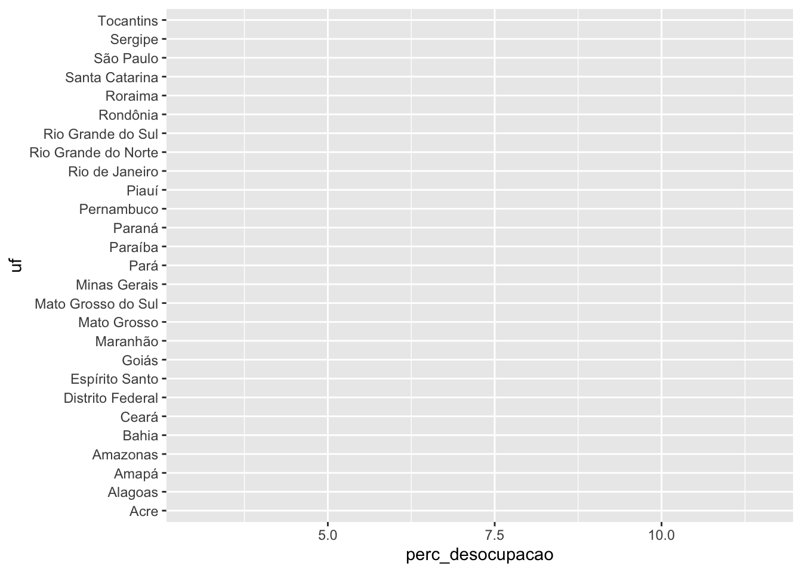
O gráfico criado apresenta os eixos, e os valores possíveis. Porém ainda não tem nenhuma geometria para representar os dados. Para adicionar uma geometria ao gráfico, utilizamos funções da família geom_*. Nesse caso, vamos utilizar a função geom_col() para criar um gráfico de colunas:
1dados_tri_recente |>2ggplot() +3aes(x = perc_desocupacao, y = uf) +4geom_col()
1
Dados: dados que serão utilizados
2
ggplot(): função para iniciar o gráfico
3
Aesthetics(atributos estéticos): informando quais variáveis serão utilizadas nos eixos x e y
4
Geometria do gráfico: informando que faremos um gráfico de colunas
Dica
Atenção: Observe que a cada linha de código, adicionamos um + para adicionar um novo elemento ao gráfico.
A partir da função ggplot(), sempre utilizamos + para adicionar novos elementos ao gráfico.
4.5 Criando gráficos exploratórios
Vamos criar alguns gráficos exploratórios com os dados de desocupação por trimestre e por estado.
Gráficos exploratórios são utilizados para entender melhor os dados, identificar padrões e tendências, e verificar a presença de outliers. Neste momento, não estamos preocupados com a estética do gráfico, mas sim com a interpretação dos dados.
4.5.1 Tipos de gráficos
4.5.1.1 Gráficos de dispersão
Vamos começar criando um gráfico de dispersão (conhecido também como gráfico de pontos). Para isso, utilizaremos a função ggplot() e a função geom_point().
O gráfico de dispersão é utilizado para visualizar a relação entre duas variáveis quantitativas.
dados |>filter(uf_sigla =="SP") |>ggplot() +aes(x = trimestre_inicio, y = perc_desocupacao) +geom_point()
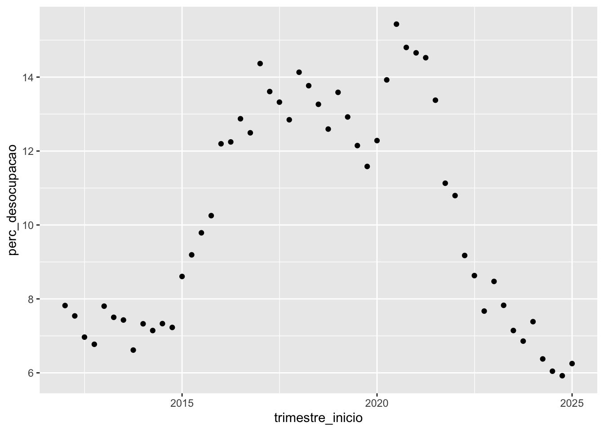
4.5.1.2 Gráficos de linha
Gráficos de linha são muito utilizados para representar uma variável ao longo do tempo. A função de geometria utilizada é a geom_line().
Vamos criar um gráfico de linha para visualizar a evolução da taxa de desocupação ao longo dos trimestres para apenas um estado:
dados |>filter(uf_sigla =="SP") |>ggplot() +aes(x = trimestre_inicio, y = perc_desocupacao) +geom_line()
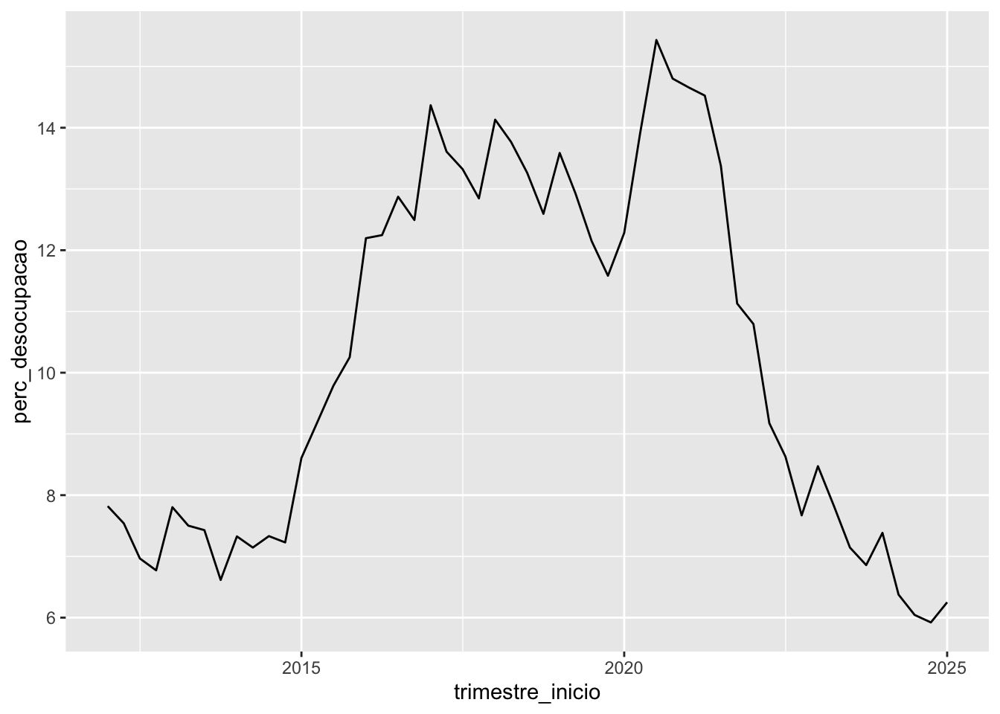
E se quisermos ver para todos os estados? Nesse caso, é importante usar um argumento adicional na função aes(), o group, para que o ggplot2 saiba que queremos uma linha para cada estado.
dados |>ggplot() +aes(x = trimestre_inicio, y = perc_desocupacao) +geom_line(aes(group = uf))
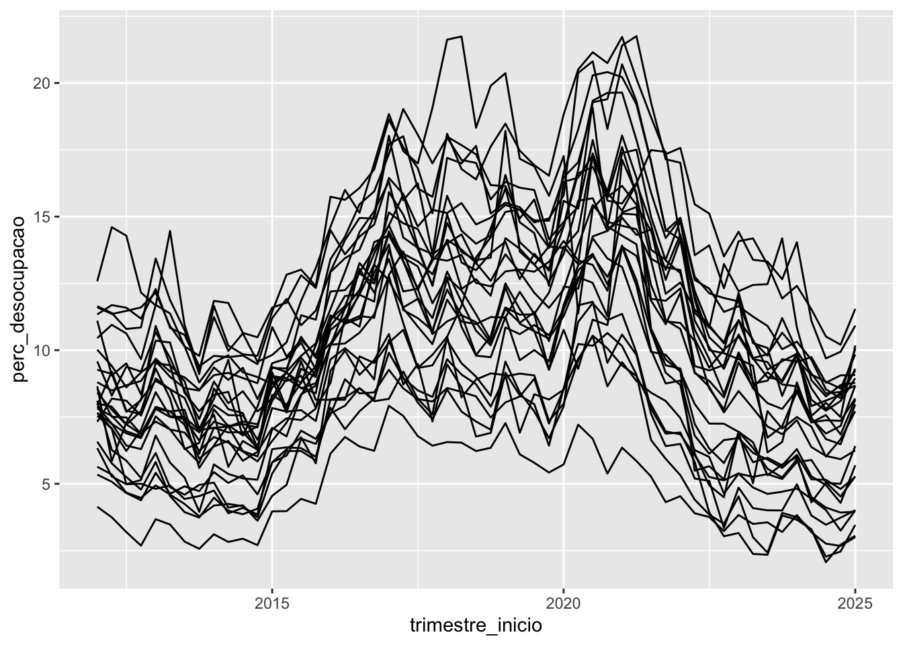
4.5.2 Combinando geometrias
Podemos combinar diferentes geometrias no mesmo gráfico. Por exemplo, podemos adicionar um gráfico de pontos ao gráfico de linhas que criamos anteriormente:
dados |>filter(uf_sigla =="SP") |>ggplot() +aes(x = trimestre_inicio, y = perc_desocupacao) +geom_line(color ="red") +geom_point(color ="blue")
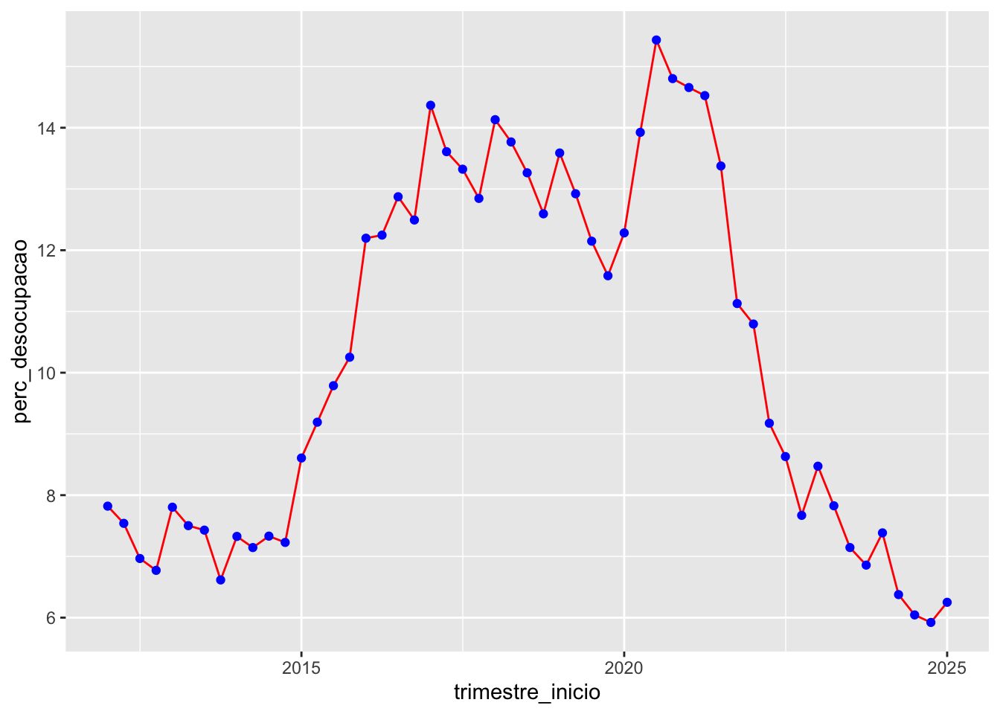
Outro ponto importante é que a ordem das geometrias importa! No exemplo acima, a linha é desenhada primeiro, e os pontos são adicionados por cima da linha. Se trocarmos a ordem das geometrias, os pontos serão desenhados primeiro, e a linha será desenhada por cima dos pontos.
dados |>filter(uf_sigla =="SP") |>ggplot() +aes(x = trimestre_inicio, y = perc_desocupacao) +geom_point(color ="blue") +geom_line(color ="red")
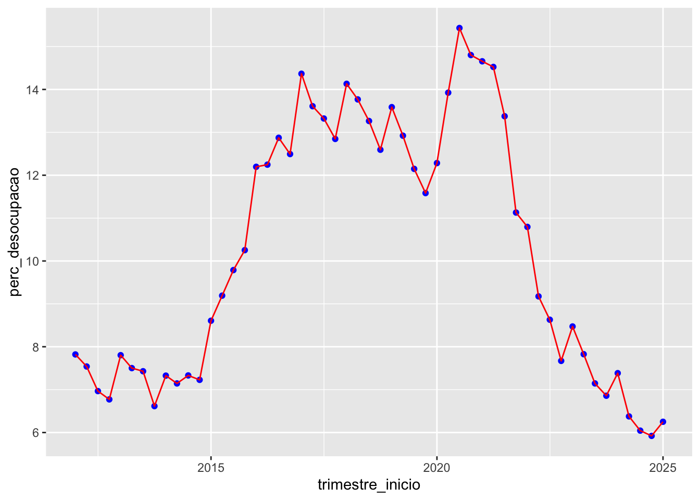
4.5.3 Gráficos de barras/colunas
Para os gráficos de barras/colunas, podemos utilizar duas funções: geom_bar() e geom_col(). A diferença entre elas é que geom_bar() é utilizada quando queremos contar a frequência de uma variável categórica, enquanto geom_col() é utilizada quando queremos visualizar uma variável numérica.
Vamos criar um gráfico de colunas para visualizar a taxa de desocupação dos estados no trimestre mais recente. Como já temos a coluna com o valor numérico que queremos visualizar (perc_desocupacao), utilizaremos a função geom_col():
dados_tri_recente |>ggplot() +aes(y = uf, x = perc_desocupacao) +geom_col()
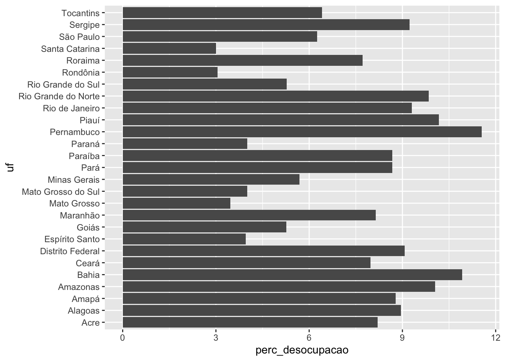
A função geom_bar() é utilizada para representar contagens. Vamos responder a seguinte pergunta de exemplo: quantas vezes cada estado apresentou uma taxa de desocupação maior ou igual à 20%? Para isso, precisamos filtrar os dados antes de criar o gráfico, e a função geom_bar() será utilizada para contar a frequência de cada estado. Os estados que não aparecerem no gráfico é porque não tiveram nenhuma taxa de desocupação maior ou igual à 20%, no período que temos dados.
dados |>filter(perc_desocupacao >=20) |>ggplot() +aes(x = uf) +geom_bar()
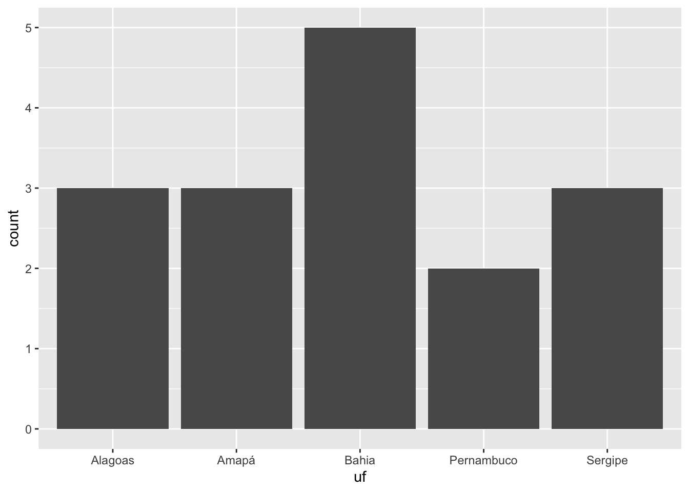
4.5.4 Gráfico de histograma
O histograma é um gráfico que mostra a distribuição de uma variável numérica. A função de geometria utilizada é a geom_histogram().
Podemos visualizar a distribuição da variável perc_desocupacao, considerando todos os trimestres:
dados |>ggplot() +aes(x = perc_desocupacao) +geom_histogram(binwidth =1)
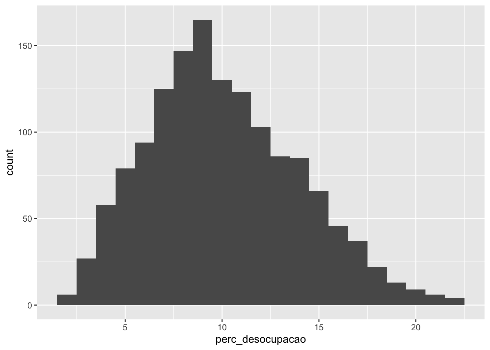
Outro tipo de gráfico que pode ser utilizado para visualizar a distribuição de uma variável numérica é o gráfico de densidade. A função de geometria utilizada é a geom_density().
dados |>ggplot() +aes(x = perc_desocupacao) +geom_density()
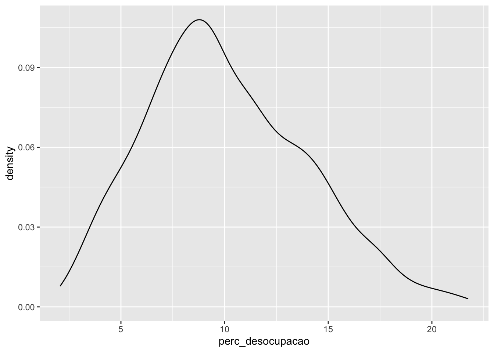
4.5.5 Gráficos de caixa (boxplot)
O gráfico de caixa1 (mais conhecido como boxplot) é utilizado para visualizar a distribuição de uma variável numérica. Esse é um tipo de gráfico que não é muito comum vermos no dia-a-dia, mas é muito usado em pesquisas e análises estatísticas.
Este gráfico apresenta informações como a mediana, quartis, valores mínimos e máximos, e possíveis outliers.
Para criar um boxplot, utilizaremos a função de geometria geom_boxplot()
dados |>ggplot() +aes(y = regiao, x = perc_desocupacao) +geom_boxplot()
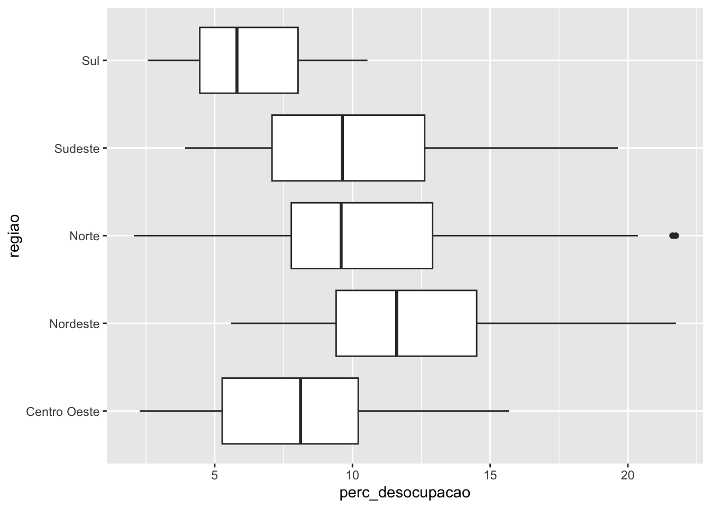
4.5.6 Gráficos por subgrupos
4.5.6.1 Subgrupos por Cor
Podemos adicionar mais uma variável ao gráfico, utilizando a cor para representá-la. Para isso, utilizamos os argumentos fill ou color dentro da função aes():
fill: preenche a área com a cor. Útil para gráficos de barras e colunas, por exemplo.
color: adiciona a cor ao contorno. Útil para gráficos de linhas e pontos, por exemplo.
Vamos ver um exemplo de gráfico de colunas apresentado anteriormente, com preenchimento (fill) por região:
Adicionando a cor de preenchimento utilizando a coluna regiao, com o argumento fill. Isso precisa estar DENTRO do aes().
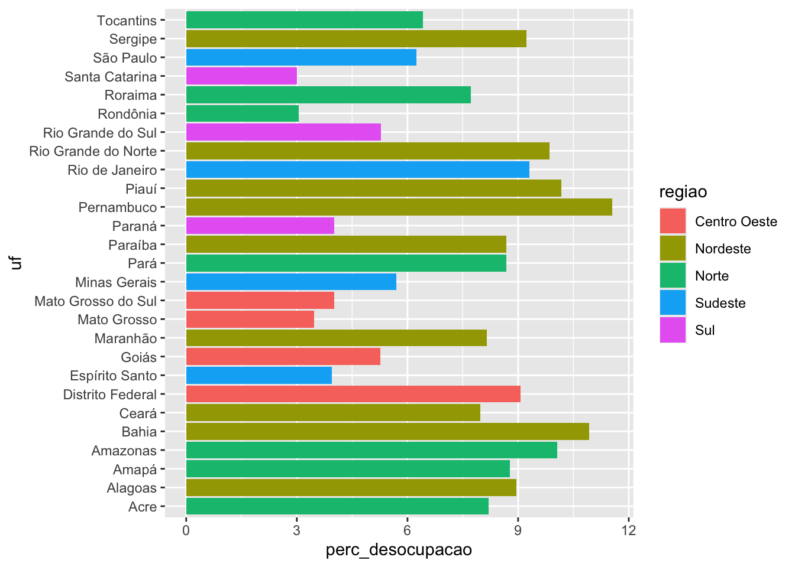
Vamos ver um exemplo de gráfico de linhas apresentado anteriormente, adicionamos pontos e usamos a cor para representar o período que consideramos como pandemia (color):
dados |>1filter(uf_sigla =="SP") |>mutate(periodo_pandemia =as.character(periodo_pandemia)) |>ggplot() +aes(x = trimestre_inicio, y = perc_desocupacao) +geom_line() +2geom_point(aes(color = periodo_pandemia))
1
Filtrando dados para representar apenas a Bahia.
2
Adicionando a cor do ponto utilizando a coluna periodo_pandemia, com o argumento color. Isso precisa estar DENTRO do aes().
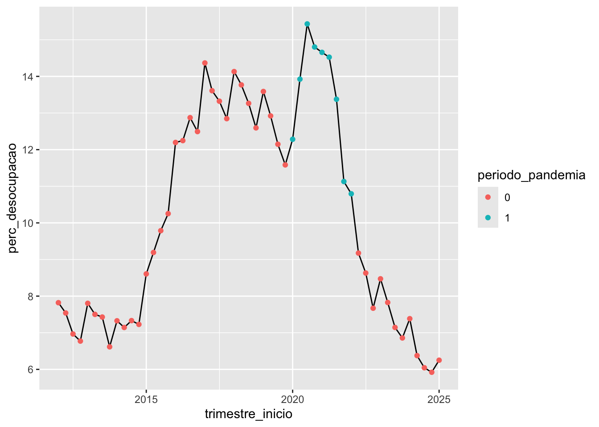
4.5.6.2 Subgrupos por Facetas (facet)
As facetas (ou facet) são utilizadas para dividir o gráfico em subgráficos, com base nos valores de uma ou duas variáveis categóricas.
Existem duas funções principais para criar facetas: facet_wrap() ou facet_grid().
A função facet_wrap() cria uma faceta para cada categoria da variável:
dados |>ggplot() +aes(x = trimestre_inicio, y = perc_desocupacao) +geom_line(aes(group = uf)) +1facet_wrap(~regiao)
1
Adicionando a função facet_wrap() para criar um gráfico para cada categoria da variável regiao.
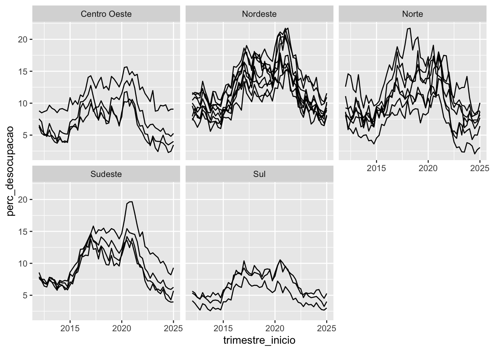
Veja que o gráfico é dividido em 5 subgráficos, um para cada região do Brasil. Os valores dos eixos x e y são os mesmos para todos os subgráficos, possibilitando a comparação entre eles.
Já a função facet_grid() cria um gráfico para cada combinação de categorias de duas variáveis.
dados |>ggplot() +aes(y = perc_desocupacao) +geom_boxplot() +1facet_grid(regiao ~ periodo_pandemia)
1
Adicionando a função facet_grid() para criar um gráfico para cada combinação de categorias das variáveis regiao e periodo_pandemia.
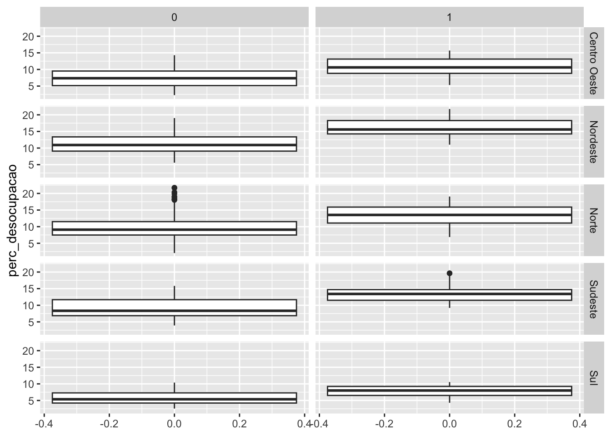
4.5.7 Revisão
A partir dos exemplos apresentados, podemos listar alguns pontos importantes sobre o ggplot2:
A função ggplot() cria um objeto gráfico vazio
Podemos usar o pipe (%>% ou |>) para encadear as funções até a função ggplot().
A partir da função ggplot(), não usamos mais o pipe (%>% ou |>), e sim o +.
A função aes() define o mapeamento estético (aesthetics mapping) entre as colunas da base de dados (variáveis) e os elementos visuais do gráfico (eixo, posição, cor, tamanho, etc).
Os atributos estéticos (aes) x e y representam os eixos x e y do gráfico.
Para adicionar uma geometria ao gráfico, usamos alguma função da família geom_*.
Podemos usar mais do que uma geometria no mesmo gráfico, e a ordem importa!
4.6 Visualizando os dados
Para quem está começando, recomendo utilizar o pacote esquisse, que facilita a criação de gráficos com o ggplot2.
install.packages("esquisse", dependencies =TRUE)
Depois de instalar o pacote, podemos carregá-lo e utilizar a função esquisser() para criar gráficos interativos:
library(esquisse)esquisser(dados)
O esquisse oferece uma interface amigável para criar gráficos com o ggplot2, permitindo que você arraste e solte variáveis, escolha tipos de gráficos e customize os elementos do gráfico. Ao usar o esquisse, você pode gerar o código correspondente ao gráfico que está criando, e depois copiá-lo para o seu script R.